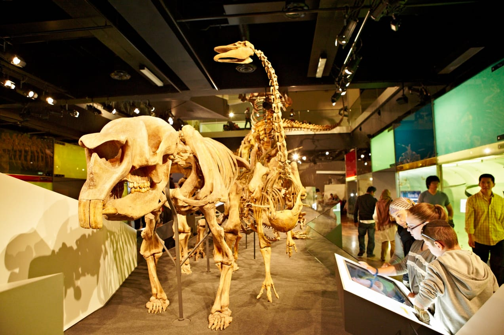
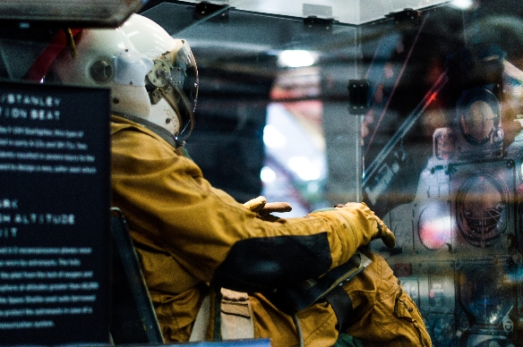
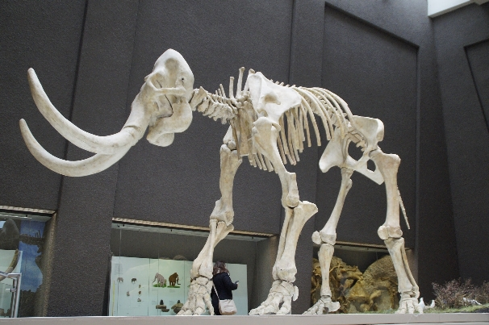
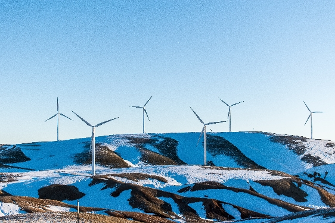

Welcome to the Community Science Museum
"Explore together"
Come join us at the Community Science Museum where we're committed to making science accessible to all.
Over the course of human history, science has developed fromour early understanding of fire, wind, water, and earth to exploring from the galaxies far away to the very building blocks of life itself.
The aim of our museum is to create a space where everyone can experience the wonders of our discoveries and perhaps even ignite a lifelong passion to continue the exploration of the world around us.
We believe science should not be confined to the textbook, but brought to live through exhibits.
ExploreFor Kids
Are you a young person looking to learn more about science? Come on down to our museum, there's plenty to see and do.
You can learn about Newtonian physics from our bumper swing, or why not travel back in time and meet our resident Wooly Mammoth? Our exhibits are designed to be accessible for interested minds, somake sure you come ready tolearn and explore.
We also have the Young Stars club which meets once a week on a saturday between 10:00 and 13:00 where you'll get to explore and experiment with our team of experts.
During the school holidays we run special holiday clubs where you can join other children your age to go on a journeyof discovery. Each holiday we pick up a new theme to explore. To find out more about the holiday club and how you can join, send us a message.
For Teachers
As a community-driven museum, we want to work with schools to create places of learning and exploring. Our team are on hand to give your students guided tours of the museum, teach them in our learning laboratory, and provide great video presentations that will excite and inspire them.
Please get in touch with us here to find out more about our facilities and arrange a time to bring your students through for a visit.
Researchers
Are you looking to get involved with our team of researchers and academics? Our museum offers various ways for you to use our resources and contribute towards them. We have online records,laboratory space, and a working relationship with a number of universities around the country.
 Get involved with the MuseumEvents
Visiting Professor of Aeronautics
It is our pleasure to announce that Prof Sheiela Widnall from the Massachusetts Institute of Technology will be delivering 3 lectures on the development of aeronautics and where the future lies in this exciting 'space'.
View EventsOct. 14th, 2021
Bergen, Norway
Night in the Museum
Get your family together for an exciting night in the museum as you sleep over beside dinosaurs and science displays. Bring your own sleeping bsg and get ready torough it as we go exploring the wonders of science.
View EventsOct. 19th, 2021
Bergen, Norway
Energetica Exhibition on Loan
On loan from the Nemo Science Museum in Amsterdam, the Energetica exhibition is coming to the Community Science Museum. It's a series of installations that allow visitors to experience the power of the elements as we harness them. From solar energy powering lighting, to 'Wind Island' that shows how turbines are able to use and control wind to create power.
View EventsNov. 13th, 2021
Bergen, Norway
Featured Current Events
 View Events
View Events
Oct. 3-5th, 2021
Bergen, Norway
Opening Hours:
Monday Closed
Tuesday 10:00 - 16:00
Wednesday 10:00 - 16:00
Thursday 10:00 - 16:00
Friday 10:00 - 19:00
Saturday 09:00 - 16:00
Sunday 09:00 - 13:00
Locations
Åsamyrane 320, 5131 Bergen, Norway
Visit UsEntry
Entry: Free
Guided Tour: 70 Nok
Tickets